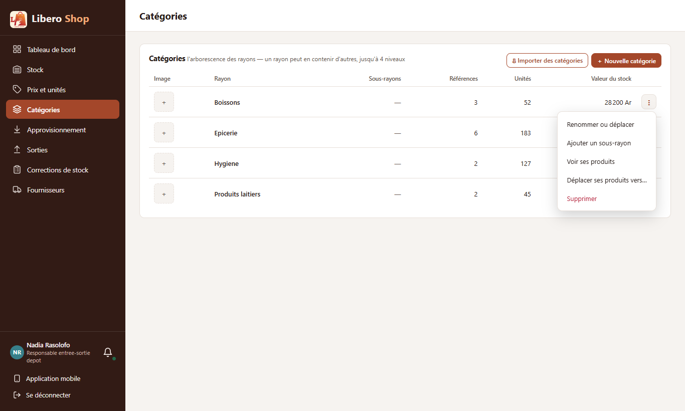
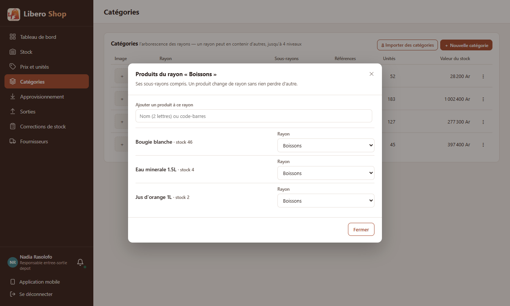
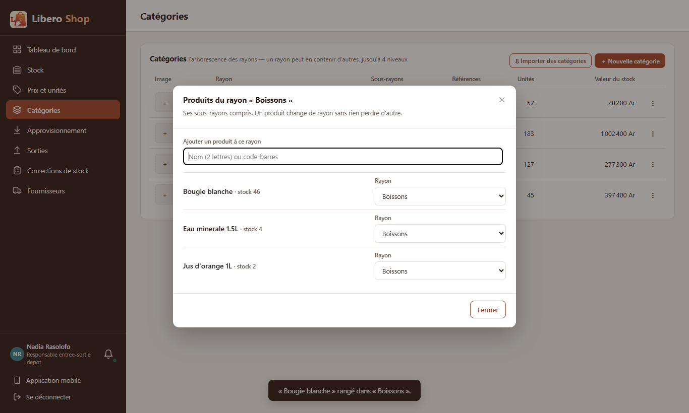
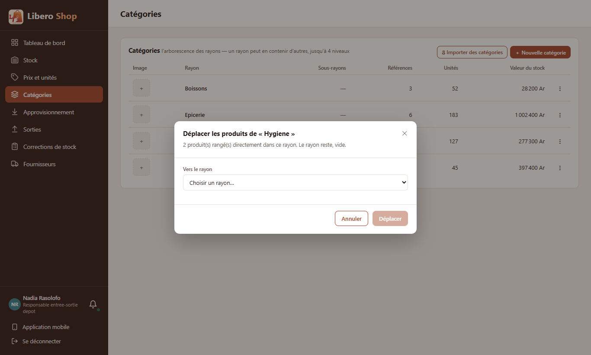

← Tous les comptes rendus de l'interface
UI-40UI-41Un menu par rayon, et ses produits à ranger
Résumé
- Sur la page Catégories, les boutons Modifier / Supprimer deviennent un « ⋮ » par rayon : Renommer ou déplacer, Ajouter un sous-rayon, Voir ses produits, Déplacer ses produits vers…, Supprimer.
- « Voir ses produits » ouvre la liste du rayon : on y ajoute un produit (nom ou code-barres) et chaque ligne peut changer de rayon sur place.
- « Déplacer ses produits vers… » range d'un coup tous les produits du rayon dans un autre ; le rayon reste, vide.
- Changer de rayon ne touche ni au prix, ni au stock, ni à l'historique ; les caisses voient le changement aussitôt.
- « Supprimer » n'apparaît que pour un rayon sans sous-rayon, comme avant (la fenêtre qui demande où mettre les produits est gardée).
1. Le problème
Un produit ne se rangeait dans un rayon que depuis sa fiche, ou pendant un import. Pour réorganiser un rayon, il fallait ouvrir les produits un par un. Déplacer tous les produits d'un rayon n'était possible qu'en le supprimant.
2. Ce qui a été fait
Figure 1 — Le menu du rayon ; les deux nouveaux gestes ne changent que le rayon des produits.
Côté serveur, un petit service dédié (ProductFilingService) range des produits dans un rayon : un seul,
quelques-uns, ou tous ceux d'un rayon. Avant, déplacer des produits n'existait qu'au moment de supprimer leur rayon,
par choix ; les nouveaux gestes en ont besoin sans suppression. La suppression garde son fonctionnement.
3. Le résultat en images
Nadia — responsable de dépôt

Figure 2 — Le menu de « Boissons ».

Figure 3 — Les produits du rayon, chacun avec son rayon modifiable.

Figure 4 — « bougie » cherchée puis ajoutée : elle rejoint Boissons.

Figure 5 — Déplacer les deux produits d'Hygiène vers un autre rayon.
4. Ce qui reste
- Compter ce rayon (inventaire d'un rayon) est le point UI-36.
- Changer l'image reste dans la colonne Image (clic sur la vignette), comme avant.
5. Tableau récapitulatif
| Fichier | Changement |
|---|---|
backend/…/service/ProductFilingService.java | nouveau : ranger des produits dans un rayon |
backend/…/web/CategoryController.java, web/dto/FileProductsRequest.java | PUT /api/categories/{id}/products, POST …/{id}/move-products |
backend/…/service/CategoryService.java | commentaire de la suppression mis à jour |
ui/…/features/depot-manager/categories.component.ts | « ⋮ » par rayon ; fenêtre « Déplacer ses produits vers… » |
ui/…/features/depot-manager/rayon-products-dialog.component.ts | nouveau : produits du rayon, ajout, changement de rayon |
ui/…/core/api/catalog.api.ts | appels de rangement |
| Règle | Test |
|---|---|
| Un produit change de rayon ; celui déjà dedans n'est pas compté | ProductFilingServiceTest — produitChangeDeRayon |
| Tout un rayon déplacé ; le rayon reste | ProductFilingServiceTest — toutLeRayonDeplace |
| Produit inconnu : rien ne bouge ; même rayon refusé | ProductFilingServiceTest — refus |
| Supprimer seulement sans sous-rayon ; déplacer seulement s'il a des produits ; changer de rayon depuis la liste | rayon-menu.spec.ts |
Tests : serveur au vert (621 tests), interface au vert (272 tests).